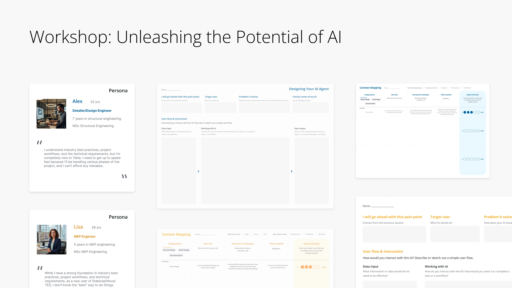
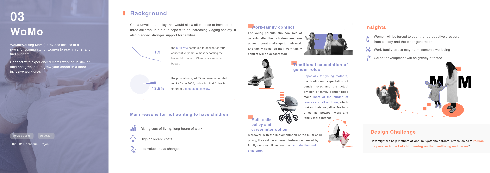
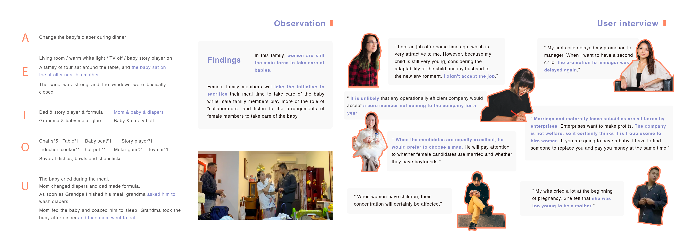
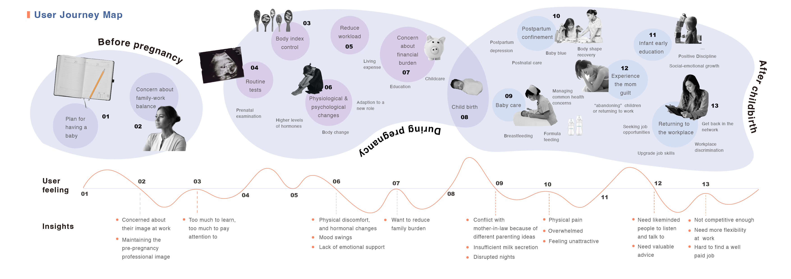
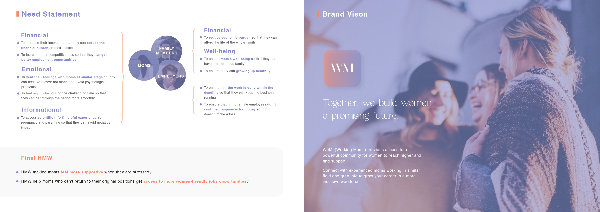
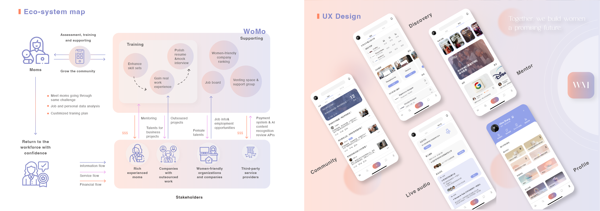
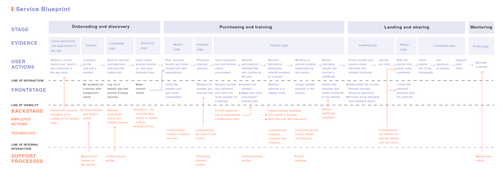
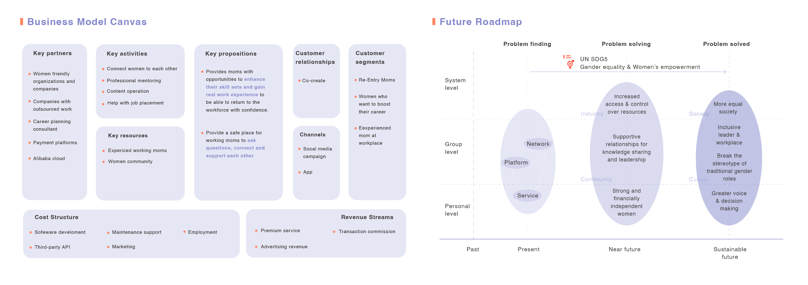

I design for the moment technical vocabulary would otherwise gatekeep a non-technical user out — and I make the system do the translating instead of the human.
Selected Work

Agent Evaluation
Turning a technical evaluation workflow into something any builder can actually use.

Project Space
A persistent project environment that connects trusted project context, AI agents, and collaboration—while keeping information current, permission-aware, and traceable.

Agent Creator Agent
Designed the conversational flow for Agent Creator Agent, which walks novice builders from a vague idea to a working AI agent without requiring prompt-engineering knowledge.
Archive
Unleashing the Potential of AI — TechMe Conference
Helsinki 2025 · Workshop Designer & FacilititorAn interactive two-day hybrid workshop that brought regional sales teams and partners together to identify real user challenges AI could help solve. Co-designed a two-page ideation canvas and Miro board with a Product Manager, guiding participants to step into MEP and Structural Engineer personas, map and prioritize pain points, develop solutions, and vote on the most promising concepts. Rated 8.67/10 by participants.

WoMo — Working Moms
2020.12 · Individual ProjectWoMo (Working Moms) provides access to a powerful community for women to reach higher and find support. Connect with experienced moms working in similar fields and grab info to grow your career in a more inclusive workforce.






